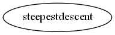

Master index
Index for manopt\solvers\steepestdescent
Dependency Graph for manopt\solvers\steepestdescent

Generated on Mon 06-Jul-2015 21:55:35 by
m2html
© 2005
 Master index
Master index Master index
Master index